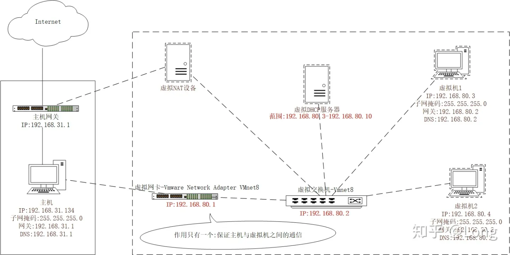
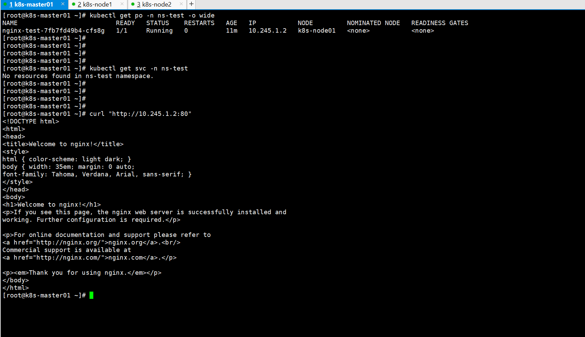

K8S 集群部署
网络选择
使用一主两从的集群部署
使用网段
192.168.100.0/24
k8s-master01ip 地址192.168.100.10k8s-node01ip 地址192.168.100.20k8s-node02ip 地址192.168.100.21
VMWare 设置网络为
NAT模式，同时关闭DHCP获取ip的方式
将网关设置为 192.168.100.2 为什么不是.1

vi /etc/sysconfig/network-scripts/ifcfg-ens33 # master 配置 TYPE=Ethernet PROXY_METHOD=none BROWSER_ONLY=no BOOTPROTO=static DEFROUTE=yes IPV4_FAILURE_FATAL=no IPV6INIT=yes IPV6_AUTOCONF=yes IPV6_DEFROUTE=yes IPV6_FAILURE_FATAL=no IPV6_ADDR_GEN_MODE=stable-privacy NAME=ens33 UUID=382c66d5-070d-4251-8b7b-fa4186812a9a DEVICE=ens33 ONBOOT=yes IPADDR=192.168.100.10 NETMASK=255.255.255.0 GATEWAY=192.168.100.2 DNS1=192.168.100.2 DNS2=114.114.114.114 # node01 配置 TYPE=Ethernet PROXY_METHOD=none BROWSER_ONLY=no BOOTPROTO=static DEFROUTE=yes IPV4_FAILURE_FATAL=no IPV6INIT=yes IPV6_AUTOCONF=yes IPV6_DEFROUTE=yes IPV6_FAILURE_FATAL=no IPV6_ADDR_GEN_MODE=stable-privacy NAME=ens33 UUID=382c66d5-070d-4251-8b7b-fa4186812a9a DEVICE=ens33 ONBOOT=yes IPADDR=192.168.100.20 NETMASK=255.255.255.0 GATEWAY=192.168.100.2 DNS1=192.168.100.2 DNS2=114.114.114.114 # node02 配置 TYPE=Ethernet PROXY_METHOD=none BROWSER_ONLY=no BOOTPROTO=static DEFROUTE=yes IPV4_FAILURE_FATAL=no IPV6INIT=yes IPV6_AUTOCONF=yes IPV6_DEFROUTE=yes IPV6_FAILURE_FATAL=no IPV6_ADDR_GEN_MODE=stable-privacy NAME=ens33 UUID=382c66d5-070d-4251-8b7b-fa4186812a9a DEVICE=ens33 ONBOOT=yes IPADDR=192.168.100.21 NETMASK=255.255.255.0 GATEWAY=192.168.100.2 DNS1=192.168.100.2 DNS2=114.114.114.114 # 重启 reboot # ssh 连接 master 节点 ssh root@192.168.100.10
系统配置
系统配置修改（三台服务器都要执行）
# 查看内核linux版本 cat /proc/version # [root@localhost ~]# cat /proc/version # Linux version 3.10.0-1160.el7.x86_64 (mockbuild@kbuilder.bsys.centos.org) (gcc version 4.8.5 20150623 (Red Hat 4.8.5-44) (GCC) ) #1 SMP Mon Oct 19 16:18:59 UTC 2020 # 关闭防火墙 systemctl stop firewalld && systemctl disable firewalld && iptables -F # 关闭selinux # sed -i 's/^SELINUX=enforcing$/SELINUX=permissive/' /etc/selinux/config && setenforce 0 sed -i 's/enforcing/disabled/' /etc/selinux/config && setenforce 0 # 关闭swap 且 写入到 /etc/fstab 文件中，保证重启机器也生效 swapoff -a && sed -ri 's/.*swap.*/#&/' /etc/fstab # 配置iptables的ACCEPT规则 # iptables -F && iptables -X && iptables -F -t nat && iptables -X -t nat && iptables -P FORWARD ACCEPT # 设置系统参数 cat > /etc/sysctl.d/k8s.conf << EOF net.bridge.bridge-nf-call-ip6tables = 1 net.bridge.bridge-nf-call-iptables = 1 net.ipv4.ip_forward = 1 EOF sysctl --system
系统时区
# 查看当前系统时区 timedatectl status # Local time: 一 2023-03-20 23:40:52 CST # Universal time: 一 2023-03-20 15:40:52 UTC # RTC time: 一 2023-03-20 15:40:52 # Time zone: Asia/Shanghai (CST, +0800) # NTP enabled: yes # NTP synchronized: yes # RTC in local TZ: no # DST active: n/a # 如果不一样则设置成一样的 timedatectl set-timezone Asia/Shanghai # 设置时钟同步 systemctl start chronyd systemctl enable chronyd
固定主机名
# 查看当前主机名 uname -n hostname # localhost.localdomain # 设置当前主机名同时修改 hosts 文件 # master01 节点执行 hostnamectl set-hostname k8s-master01 # ndoe01 节点执行 hostnamectl set-hostname k8s-node01 # ndoe02 节点执行 hostnamectl set-hostname k8s-node02 # 三个节点都执行 cat /etc/hosts # 向 hosts 追加 ip 主机名 映射 cat >> /etc/hosts <<-'EOF' 192.168.100.10 k8s-master01 192.168.100.20 k8s-node01 192.168.100.21 k8s-node02 EOF # 再次查看 hosts 内容 cat /etc/hosts # 设置完成后，重启网路服务 systemctl restart network # 或者在 master01 上执行之后直接使用文件分发 scp /etc/hosts k8s-node01:/etc/ scp /etc/hosts k8s-node02:/etc/ # 查看是否设置成功，在 master 和 node 之间通过主机名 ping ping k8s-master01 ping k8s-node01 ping k8s-node02
安装 Docker（三台服务器都同样安装）
yum -y install wget # 配置阿里云 yum 源 wget https://mirrors.aliyun.com/docker-ce/linux/centos/docker-ce.repo -O /etc/yum.repos.d/docker-ce.repo # 查看当前支持的docker版本 yum list docker-ce --showduplicates # 安装特定版本的 docker 这里使用 19.03.9-3.el7 yum -y install docker-ce-19.03.9-3.el7 docker-ce-cli-19.03.9-3.el7 # 编辑docker配置文件 # docker默认情况下使用cgroup driver作为cgroupfs，而k8s推荐使用systemd来代替cgroupfs mkdir /etc/docker/ cat > /etc/docker/daemon.json << EOF { "registry-mirrors": ["https://gqs7xcfd.mirror.aliyuncs.com","https://hub-mirror.c.163.com"], "exec-opts": ["native.cgroupdriver=systemd"], "log-driver": "json-file", "log-opts": { "max-size": "100m" }, "storage-driver": "overlay2" } EOF # 启动docker systemctl daemon-reload && systemctl enable docker && systemctl start docker # 查看docker版本 docker version
所有节点安装 kubeadm、kubelet 和 kubectl
# 配置yum源 cat > /etc/yum.repos.d/kubernetes.repo << EOF [kubernetes] name=Kubernetes baseurl=https://mirrors.aliyun.com/kubernetes/yum/repos/kubernetes-el7-x86_64/ enabled=1 gpgcheck=1 repo_gpgcheck=1 gpgkey=https://mirrors.aliyun.com/kubernetes/yum/doc/yum-key.gpg https://mirrors.aliyun.com/kubernetes/yum/doc/rpm-package-key.gpg EOF # 复制到k8s-node01、k8s-node02 scp /etc/yum.repos.d/kubernetes.repo k8s-node01:/etc/yum.repos.d/ scp /etc/yum.repos.d/kubernetes.repo k8s-node02:/etc/yum.repos.d/ # 查看 cat /etc/yum.repos.d/kubernetes.repo # 查询 kubeadm、kubelet、kubectl 可用的版本 yum list kubeadm --showduplicates yum list kubelet --showduplicates yum list kubectl --showduplicates # 安装指定版本的 kubeadm、kubelet、kubectl（这里使用 1.19.6-0） yum install -y kubeadm-1.19.6-0 kubelet-1.19.6-0 kubectl-1.19.6-0 # 设置kubelet开机自启 # 安装好kubelet后先不用启动，当集群初始化的时候会自动启动kubelet，选择启动kubelet会报错 systemctl enable kubelet # 查看版本 kubectl version kubelet --version kubeadm version
Master 节点初始化
# 指定k8s的版本、pod网络地址段、service资源网络地址段、apiserver地址 # apiserver-advertise-address 指定为执行的 master ip kubeadm init \ --kubernetes-version=1.19.6 \ --apiserver-advertise-address=0.0.0.0 \ --service-cidr=10.96.0.0/16 \ --pod-network-cidr=10.245.0.0/16 \ --image-repository registry.aliyuncs.com/google_containers \ --apiserver-advertise-address=192.168.100.10 # 最终执行成功时日志 # Your Kubernetes control-plane has initialized successfully! # # To start using your cluster, you need to run the following as a regular user: # # mkdir -p $HOME/.kube # sudo cp -i /etc/kubernetes/admin.conf $HOME/.kube/config # sudo chown $(id -u):$(id -g) $HOME/.kube/config # # You should now deploy a pod network to the cluster. # Run "kubectl apply -f [podnetwork].yaml" with one of the options listed at: # https://kubernetes.io/docs/concepts/cluster-administration/addons/ # # Then you can join any number of worker nodes by running the following on each as root: # # kubeadm join 192.168.100.10:6443 --token bhid43.o7mj1qdfjjzdo3dv \ # --discovery-token-ca-cert-hash sha256:839de59433230cc3a84a7fa0b87d4f0c6fdfc5a1d4e1668cb6caa348b585bd18 # # 这个信息非常重要 # kubeadm join 192.168.100.10:6443 --token bhid43.o7mj1qdfjjzdo3dv \ # --discovery-token-ca-cert-hash sha256:839de59433230cc3a84a7fa0b87d4f0c6fdfc5a1d4e1668cb6caa348b585bd18 # 创建必要文件（在上面打印的信息中也能看到） # 这些文件是使用 kubectl 命令的前提，kubectl 命令使用是需要去找 config 配置文件 mkdir -p $HOME/.kube sudo cp -i /etc/kubernetes/admin.conf $HOME/.kube/config sudo chown $(id -u):$(id -g) $HOME/.kube/config # 查看master是否加入集群 kubectl get node
k8s-node01、k8s-node02 加入集群 (分别在两台 node 机子上执行)
# 使用初始化 master 节点时给出的信息 kubeadm join 192.168.100.10:6443 --token bhid43.o7mj1qdfjjzdo3dv \ --discovery-token-ca-cert-hash sha256:839de59433230cc3a84a7fa0b87d4f0c6fdfc5a1d4e1668cb6caa348b585bd18 # 执行成功后打印出 # This node has joined the cluster: # * Certificate signing request was sent to apiserver and a response was received. # * The Kubelet was informed of the new secure connection details. # # Run 'kubectl get nodes' on the control-plane to see this node join the cluster.
集群配置网络插件 flannel
yum install -y lrzsz # 配置文件可从这里获取 https://raw.githubusercontent.com/coreos/flannel/master/Documentation/kube-flannel.yml # 注意 "Network": "10.245.0.0/16", 地址需与初始化pod-network-cid地址保持一致 # 同时记得配置文件中的镜像地址使用 docker.io/flannel 而不要使用 docker.io/rancher 否则下载不了 # coredns会在网络组件安装成功后恢复正常 kubectl apply -f ./kube-flannel.yml # 三个节点都重启kubelet服务 systemctl restart kubelet
到此不出意外的话
K8S集群已经成功启动了。
遗留问题解决
# 查看组件健康状态 kubectl get cs # NAME STATUS MESSAGE ERROR # scheduler Unhealthy Get "http://127.0.0.1:10251/healthz": dial tcp 127.0.0.1:10251: connect: connection refused # controller-manager Unhealthy Get "http://127.0.0.1:10252/healthz": dial tcp 127.0.0.1:10252: connect: connection refused # etcd-0 Healthy {"health":"true"} # 出现这种情况，是 /etc/kubernetes/manifests/ 下的 # kube-controller-manager.yaml 和 kube-scheduler.yaml 设置的默认端口是0导致的， # 解决方式是注释掉对应的port即可


# 注释掉这两行之后，重启kubelet服务 systemctl restart kubelet # 再次查看组件健康状态，已经都正常了 kubectl get cs # Warning: v1 ComponentStatus is deprecated in v1.19+ # NAME STATUS MESSAGE ERROR # scheduler Healthy ok # controller-manager Healthy ok # etcd-0 Healthy {"health":"true"} # 查看节点状态 kubectl get nodes # NAME STATUS ROLES AGE VERSION # k8s-master01 Ready master 21h v1.19.6 # k8s-node01 Ready <none> 21h v1.19.6 # k8s-node02 Ready <none> 21h v1.19.6
向 K8S 集群中部署一些服务
创建命名空间 ns-test
apiVersion: v1 kind: Namespace metadata: name: ns-test labels: name: label-test
cat > ~/namespace-test.yaml << EOF apiVersion: v1 kind: Namespace metadata: name: ns-test labels: name: label-test EOF # 创建命名空间 kubectl apply -f ~/namespace-test.yaml # 查询所有命名空间 kubectl get namespace
创建 deployment
apiVersion: apps/v1 kind: Deployment metadata: namespace: ns-test name: nginx-test spec: selector: matchLabels: app: nginx replicas: 2 template: metadata: labels: app: nginx spec: containers: - name: nginx image: nginx:alpine ports: - containerPort: 80
cat > ~/nginx-test.yaml << EOF apiVersion: apps/v1 kind: Deployment metadata: namespace: ns-test name: nginx-test spec: selector: matchLabels: app: nginx replicas: 1 template: metadata: labels: app: nginx spec: containers: - name: nginx image: nginx:alpine ports: - containerPort: 80 EOF # 创建 deployment kubectl apply -f ~/nginx-test.yaml # 查询所有 deployment 或 pod kubectl get deployment -n ns-test kubectl get pod -n ns-test -o wide
此时通过 kubectl get pod -n ns-test -o wide 获得的 pod 的 ip 已经能够访问了。三个节点上都是可以访问的。
但是在集群外部还是无法访问的。

创建 service
apiVersion: v1 kind: Service metadata: name: nginx-service namespace: ns-test spec: type: NodePort selector: app: nginx ports: - protocol: TCP port: 80 targetPort: 80 nodePort: 1080
cat > ~/service-test.yaml << EOF apiVersion: v1 kind: Service metadata: name: nginx-service namespace: ns-test spec: type: NodePort selector: app: nginx ports: - protocol: TCP port: 80 targetPort: 80 nodePort: 30080 EOF # 创建 service kubectl apply -f ~/service-test.yaml # 查询所有 service kubectl get svc -n ns-test
此时在 k8s 集群外部，例如在 VMWare 的宿主机上，利用 k8s-master01 的 ip: 192.168.100.10 加上 nodePort: 30080
即可访问集群内的 Nginx 服务。